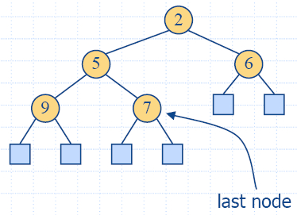

Chapter 7: Priority Queues - II
7.3 Heaps
-
An efficient realization of a priority queue uses a
(nonlinear) data structure called a heap −
performs both insertions and removals in logarithmic time O(log n).
7.3.1 The Heap Data
Structure
- A heap is a binary tree storing keys at its internal nodes and
satisfying the following properties:
- Heap-Order:
for every internal node v
other than the root, key(v) ≥ key(parent(v))
- Complete Binary Tree:
let h be the
height of the heap
- for i = 0,
… , h − 2, there
are 2i
nodes of depth i
- at depth h −
1, the internal nodes are to the left of the external
nodes
- The last node
of a heap is the rightmost internal node of depth h − 1

Proposition 7.5: A heap
T storing n keys has height h = [log(n + 1)].
Proof: (we apply the complete binary tree property)
- Let h be the
height of a heap storing n
keys
-
Since there are 2i
keys at depth i =
0, … , h −2 and at
least one key at depth h
−1, we have n ≥ 1 +
2 + 4 +… + 2h −2
+ 1 = 2h −1, thus, n ≥ 2h − 1, i.e. h ≥
log n + 1.
-
Since for complete binary tree when there are 2h − 1
keys at depth h
−1, we have n
≤ 1 + 2 + 4 +… + 2h −1 = 2h −1,
thus, n ≤
2h −1,
i.e. h ≤ log (n + 1).

7.3.2 Implementing a Priority
Queue with a Heap
- We can use a heap to implement a priority queue
- We store a (key,
element) item at
each internal node
- We keep track of the position of the last node

The Vector Representation of a
Heap
- We can represent a heap with n keys by means of a vector of length n + 1
- For the node at rank i
- the left child is at rank 2i
- the right child is at rank 2i +1
- Links between nodes are not explicitly stored
- The leaves are not represented
- The cell of at rank 0 is not used
- Operation insertItem
corresponds to inserting at rank n + 1
- Operation removeMin
corresponds to removing at rank 1
- Yields in-place heap-sort

Insertion
- Method insertItem
of the priority queue ADT corresponds to the insertion of a
key k to the heap
- The insertion algorithm consists of three steps
- Find the insertion node z (the new last node)
- Store k at z and expand z into an internal node
- Restore the heap-order property (discussed next)
Up-Heap Bubbling after an Insertion
- After the insertion of a new key k, the heap-order property may
be violated
- Algorithm upheap restores the heap-order property by
swapping k along an
upward path from the insertion node
- Upheap terminates when the key k reaches the root or a node whose parent
has a key smaller than or equal to k
- Since a heap has height O(log n),
upheap runs in O(log
n) time
Removal
- Method removeMin
of the priority queue ADT corresponds to the removal of the
root key from the heap
- The removal algorithm consists of three steps
- Replace the root key with the key of the last node w
- Compress w
and its children into a leaf
- Restore the heap-order property (discussed next)
Down-Heap Bubbling after a
Removal
- After replacing the root key with the key k of the last node, the heap-order property may
be violated
- Algorithm downheap restores the heap-order property by
swapping key k along
a downward path from the root
- Downheap terminates when key k reaches a leaf or a node whose children
have keys greater than or equal to k
- Since a heap has height O(log n),
downheap runs in O(log
n) time
Analysis
Function
|
Time
|
size(),
isEmpty()
|
O(1)
|
minElement(),
minKey()
|
O(1)
|
insertItem(k,e)
|
O(log n)
|
removeMin()
|
O(log n)
|
7.3.3 C++ Implementation
html-7.7
(HeapTree)
html-7.8 (HPQ1)
html-7.9 (HPQ2)
VisoAlgo
Heap
Visualization
7.3.4 Heap-Sort
- Consider a priority queue with n items implemented by means of a heap
- the space used is O(n)
- methods insertItem
and removeMin
take O(log n) time
- methods size,
isEmpty, minKey, and minElement take O(1) time
- Using a heap-based priority queue, we can sort a sequence
of n elements in O(n log n) time
- The resulting algorithm is called heap-sort
- Heap-sort is much faster than quadratic sorting
algorithms, such as insertion-sort and selection-sort
Heap
Sort